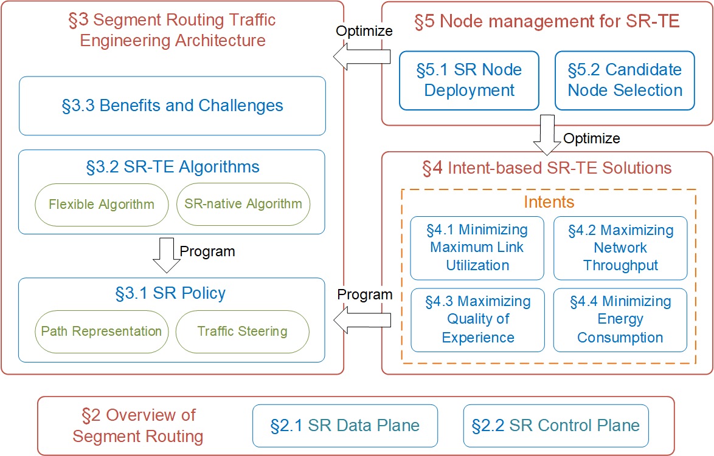

Research Experience
IRepL360: QoE-Preference-Aware 360-Degree Video Streaming With Imitation Learning and Representation
Learning [2023.1 ~ ]
Role: First author. - Status: Ongoing, plan to submit ACM Multimedia 2023 (CCF-A).
Imitation Learning-Based Configuration-Adaptive Streaming for Live Video Analytics with Cross-Camera
Collaboration [2022.8 ~ 2023.1]
Outline: This paper propose ILCAS which optimizes configuration-adaptive video streaming for live
video analytics with Imitation Learning, where the agent is trained with the expert demonstrations
instead of an explicit reward function. Based on motion vectors extracted from camera codecs, we derive motion features
maps to capture video dynamics for ILCAS. Besides, ILCAS incorporates a cross-camera collaboration
scheme to exploit the cameras correlations for more proper configuration selection.
Extensive experiments confirm the superiority of ILCAS over SOTA solutions with 2-20.9%
improvement of mean accuracy and 19.9-85.3% reduction of chunk upload lag.
Role: First author. My contributions:
Propose to use the advanced imitation learning framework Generative Adversarial Imitation
Learning (GAIL) for optimizing live video analytics streaming, and design the core expert
policy based on dynamic programming to guide the training of agent. Design the methodology of deriving motion feature map from motion vectors to enable
ILCAS to adaptively select configurations according to video dynamics. Implement most parts of experiments and finish most of the work of paper writing.
- Status: Under review, submitted to IEEE Transactions on Mobile Computing
(CCF-A).
A Comprehensive Survey on Segment Routing Traffic Engineering [2019.11 ~ 2020.11]

Abstract: Traffic Engineering (TE) enables management of traffic in a manner that
optimizes utilization of network resources in an efficient and balanced manner. However,
existing TE
solutions face issues relating to scalability and complexity. In recent years, Segment Routing
(SR)
has emerged as a promising source routing paradigm. As one of the most important applications of
SR,
Segment Routing Traffic Engineering (SR-TE), which enables a headend to steer traffic
along
specific paths represented as ordered lists of instructions called segment lists, has the
capability to overcome the above challenges due to its flexibility and scalability. In this
paper,
we conduct a comprehensive survey on SR-TE. A thorough review of SR-TE architecture is provided
in
the first place, reviewing the core components and implementation of SR-TE such as SR Policy,
Flexible
Algorithm and SR-native algorithm. Strengths of SR-TE are also discussed, as well as its major
challenges. Next, we dwell on the recent SR-TE researches on routing optimization with various
intents, e.g., optimization on link utilization, throughput, QoE (Quality of Experience) and
energy
consumption. Afterwards, node management for SR-TE are investigated, including SR node
deployment
and candidate node selection. Finally, we discuss the existing challenges of current research
activities and propose several research directions worth of future exploration.
Key words: segment routing; traffic engineering; SR policy; routing optimization;
segment
list computation Role: First author. My contributions:
Extensively collected and read relevant literature, wrote reports for research
papers. Organized paper structure and finished paper writing. Brainstormed several in-depth future research directions based on our survey work and
personal insights.
- Status: Accepted to appear in Digital Communications and Networks
(Q1), 2022.[PDF]
Internship Experience
Summer Internship at Huawei Technology Co., Ltd. [2021.07 ~ 2021.09]
Duty: Engaged in the development of Java Web backend server based on Spring Boot
framework; responsible for the design and development of FRUD Kit in Heavenly Pond Architecture.
Position: Software engineer. Major work:
Implemented the relevant services of FRUD temporary files and completed unit
testing.
Decomposed the module of FRUD file generation with HIPO and Class Diagram, finally
designed 7 classes and 16 sub-modules and implemented the core components.
Used topological-sort and recursive algorithms to generate CDR topology data, with
data
structures such as Queue, Hash Set/Map employed to improve efficiency.
|